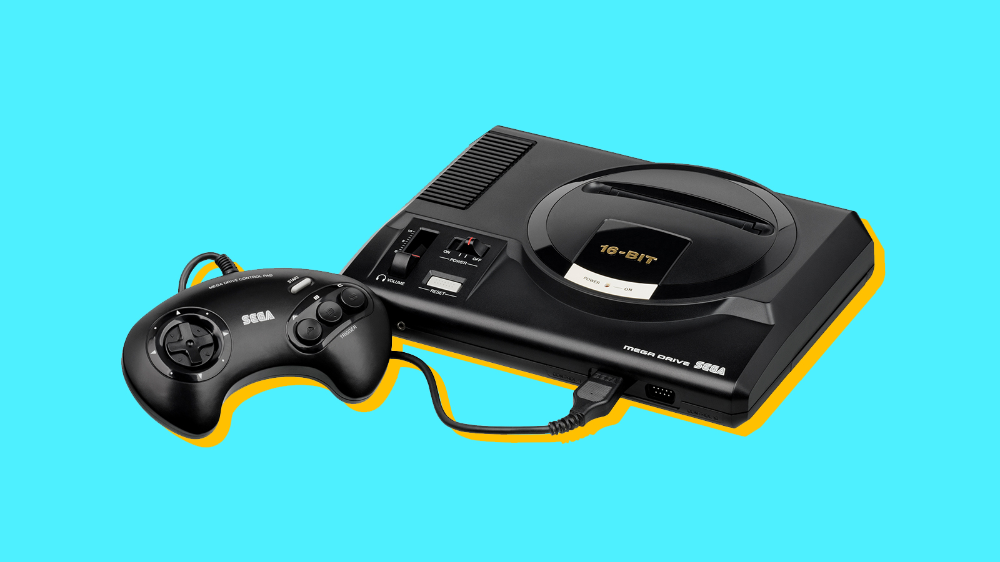
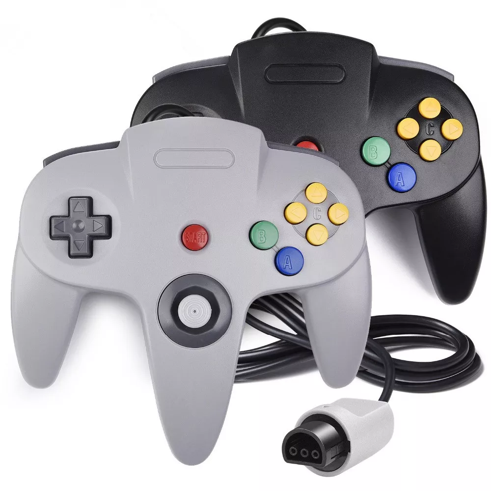
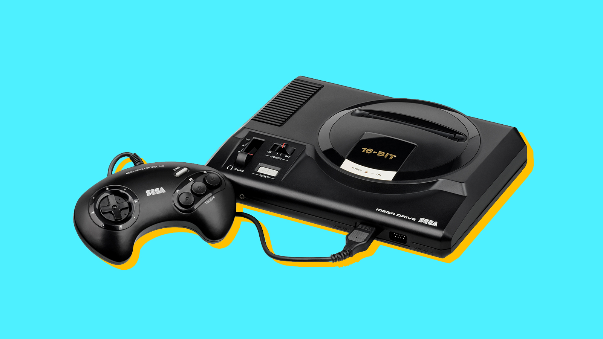
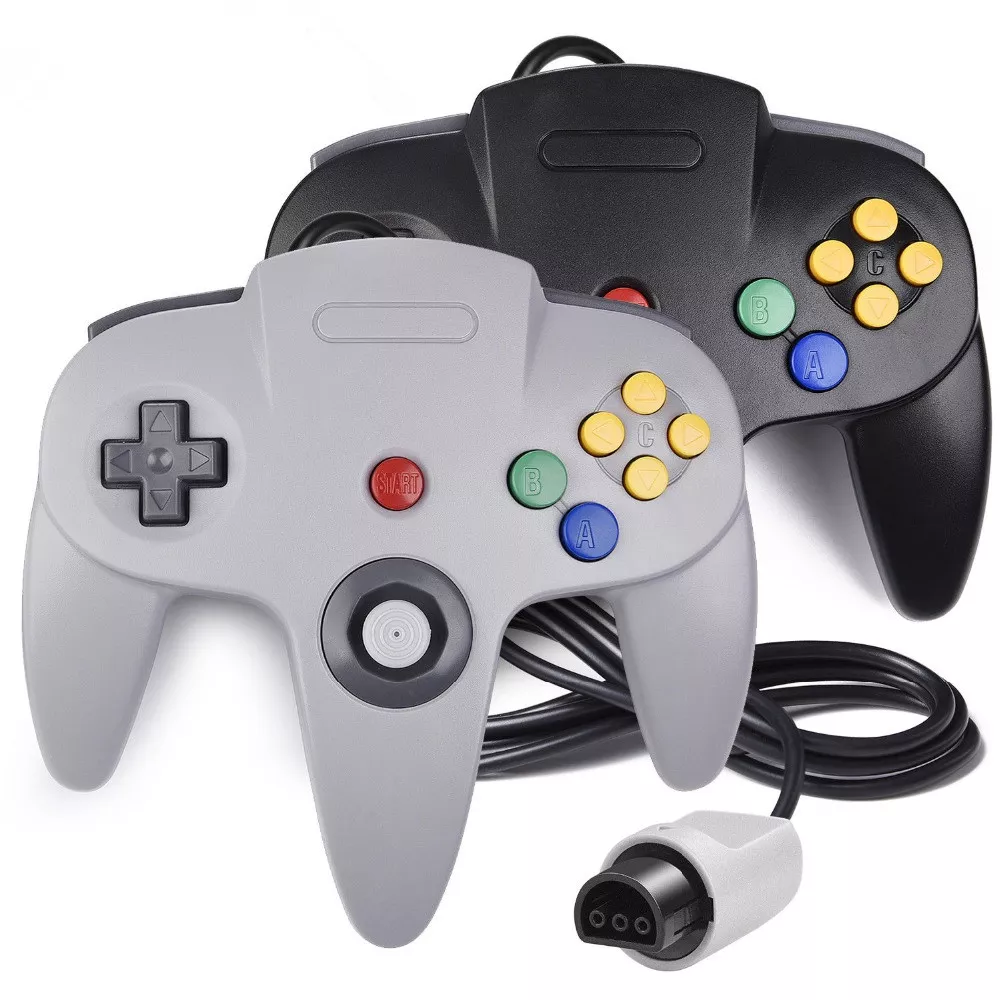

ABOUT
This website will tell you about these 3 particular gaming controllers, that were made to be the first of their kind in the time period they were made. The three controllers you can see here is the Nintendo 64, the Atari, and the Sega. All three of these are the first of their time and the first gaming controllers ever!
 


